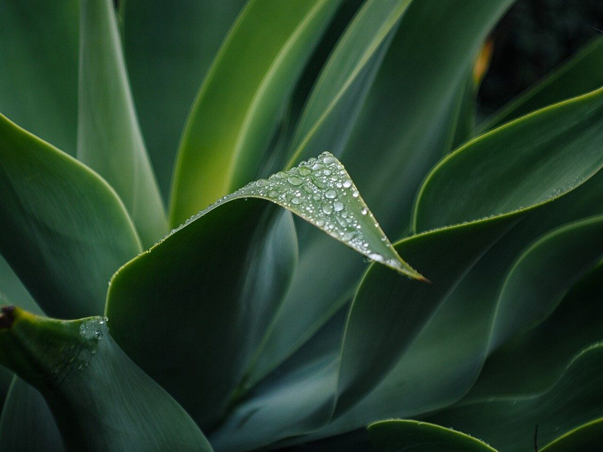
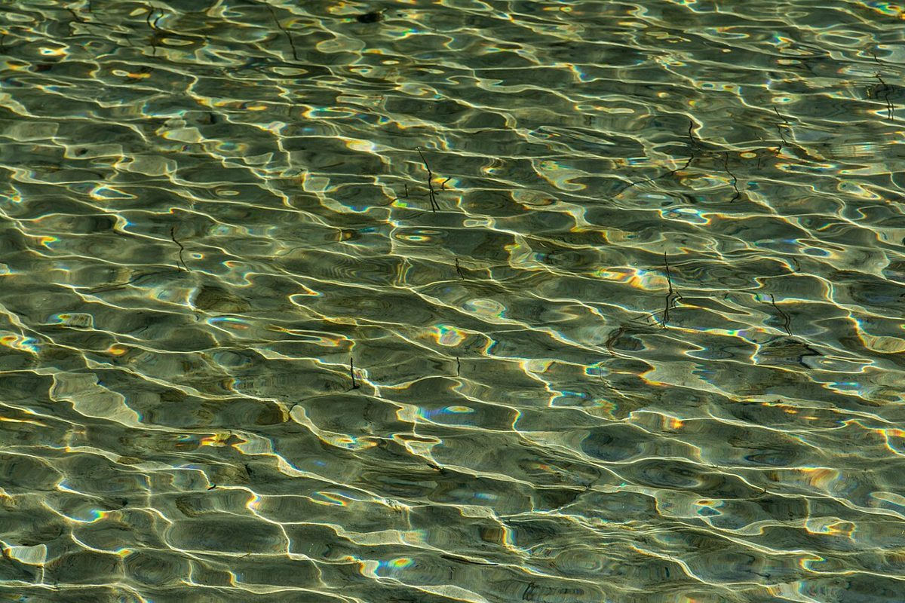
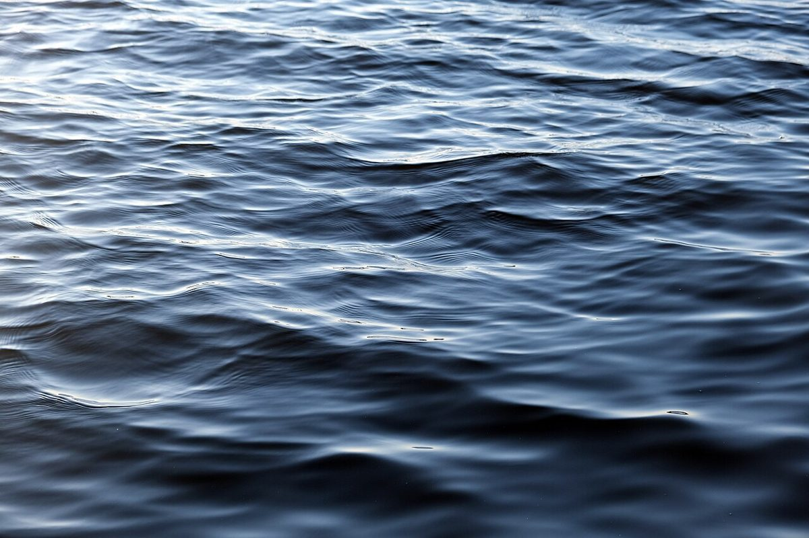

比重1.10
店のこと
店のこと
お店について確認できているのは、所在地とInstagramのアカウントだけです。
このページの「想像してみる」部分は、制作側が想像して書いたものです。お店の実際の様子・考え・メニューとは関係がありません。
確認できていること
- 店名は「aqua apis coffee」、業種はカフェ(コーヒー)
- 所在地は三重県名張市中知山469番地2(〒518-0442)
- 電話番号はなし。連絡はInstagramから
- 営業時間・定休日・メニュー・価格・ご予約・駐車場は準備中

想像してみる
名前の響きから
由来は分かりません。制作側は「aqua」から水、「apis」から蜂を連想し、水と蜜というふたつの色を思い浮かべました(お店の姿ではなく、制作側の連想です)。


